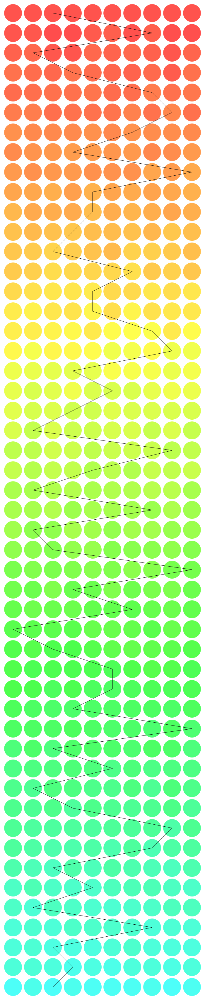

This is seen in the Peppered Moths living in industrial areas. The smoke and the other pollutants released into the
air by the industries causes the flora in the surrounding areas to become darker in appearance. Peppered Moth's
evolution in the course of the industrial revolution can be seen from the following images.
If the trees have been darkened with the pollutants, it is more probable that the dark colored individuals in the
population can camouflage themselves, among the darker surroundings increasing the probability of their survival.
The Lighter individuals on the other hand are less likely to survive because they cannot blend themselves into the
background, and the predators can find them relatively easily as compared to the darker individuals.
The following image shows the evolution of the color. We start with the light individuals in the first row and we
see that the rows after that are the offsprings of the one that survived.
The below is the image that explains that same. Keep scrolling because this is a very big image. The green line joins all the survived individuals.
In the last row, the first one practically invisible.
You see! The one of the individuals from the last row actually blended into the white background and completely vanished.
Here the color change is from red to blue.
